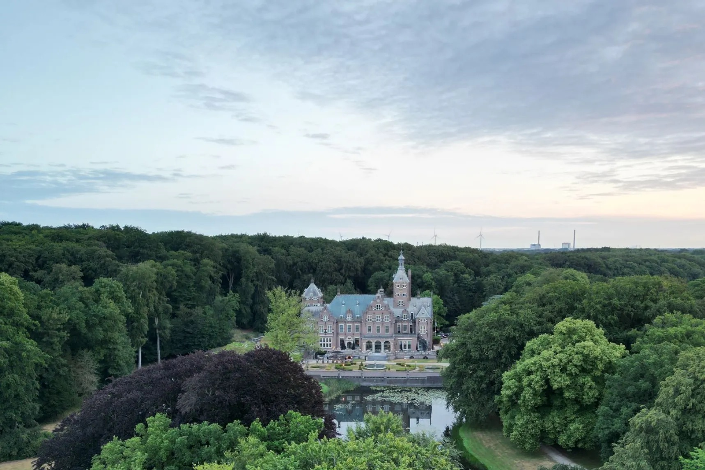
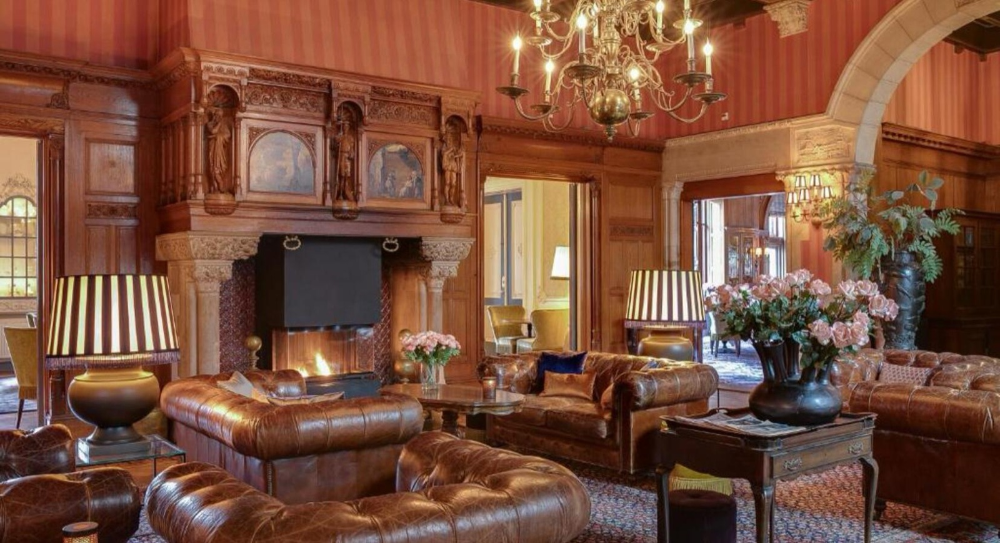
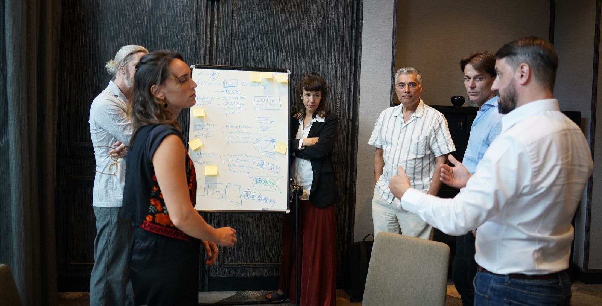
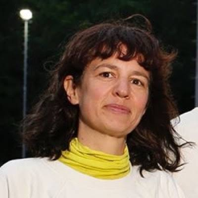
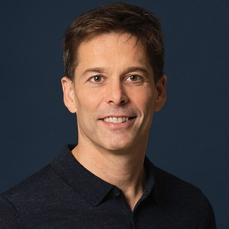

Eén dag sparren met een kleine groep design managers, in een prachtig kasteel aan de rand van de duinen.
Je bespreekt actuele vraagstukken waar je in je eentje op vastloopt, met vakgenoten die er ook middenin zitten of er al doorheen zijn.
Geen presentaties of case studies. Slimme werkvormen zorgen ervoor dat vraagstukken en oplossingen elkaar in no time vinden.
Bezoek de online voorlichtingsbijeenkomst voor een korte presentatie door de organisatoren, met ruimte voor vragen.
Je bent verantwoordelijk voor designers in een grote organisatie. De vraagstukken op je bord zijn meestal niet eenduidig, en de juiste aanpak staat niet in een boek: ons vakgebied is volop in ontwikkeling. Je wilt het wiel niet opnieuw uitvinden en vraagt je af: hoe lossen anderen dit op?
Op conferenties ontmoet je soms vakgenoten die je verder helpen, maar die momenten zijn helaas zeldzaam. Veel tijd gaat verloren aan talks die niet over jouw werk gaan, aan aanbieders van diensten of aan mensen die een baan zoeken. UX-communities gaan vooral over design, niet over de vraagstukken die jij als manager moet oplossen.
Je leert welke uitdagingen andere organisaties op jouw vakgebied hebben, hoort hoe vakgenoten jouw vraagstuk al hebben aangepakt en neemt concrete ideeën mee terug.
Vakgenoten van buiten je organisatie kijken naar jouw aanpak zonder belang, politiek of voorgeschiedenis. Ze kennen het probleem uit eigen ervaring en zeggen wat ze zien. Dat zet je vaak op een nieuw spoor.
De Mastermind vindt twee keer per jaar plaats. Wie een klik heeft, blijft elkaar zien, en met elke editie komen er nieuwe vakgenoten en invalshoeken bij.
Je denkt mee over de vraagstukken van anderen en deelt wat bij jou werkte. Door je ervaring onder woorden te brengen, zie je zelf scherper wat je aanpak sterk maakt, en wat niet.
Dit zijn uitdagingen van UX-managers die we dit jaar hebben gesproken. De thema's van de dag bepalen we op basis van de intakes; op de dag zelf kies je waar je de meeste aandacht aan geeft.
Hoe verandert AI je proces, en hoe doen anderen dat? Hoe ga je om met weerstand, met voorlopers en met beperkingen vanuit legal en compliance?
Hoe voeg je AI toe aan je producten, als feature of als fundament? Welk framework past, en wat zijn de valkuilen onderweg?
Waar beweegt het designvak naartoe, en wat betekent dat voor jouw rol? Hoe laat je je mensen daarin meegroeien, en jezelf?
Hoe geef je leiding nu de manier van werken verandert, onder meer door AI? Waar stuur je op als taken, rollen en tempo verschuiven, en hoe neem je je team daarin mee?
Volwassen UX-organisaties hebben een career framework. Die komen in allerlei soorten en maten, met hun eigen voor- en nadelen. Waar loop je tegenaan in jouw situatie, en wat kun je leren van andere systemen?
Reorganisaties, fusies, nieuwe werkwijzen: het hoort erbij. Hoe krijg je je teams mee in nieuwe structuren en werkwijzen, en misschien in een andere rol voor design?
Voor design managers (UX, CX, product design) met serieuze projecten en verantwoordelijkheid, bij grote organisaties, sterke merken en internationale agencies. Per bijeenkomst werken we met een groep van 12 tot 16 deelnemers.
Op een Mastermind-bijeenkomst draait het 100% om het gezelschap. Daarom stellen we de groep van tevoren zorgvuldig samen. Dat betekent ook dat niet iedereen kan meedoen.
Van tevoren word je persoonlijk door ons gebeld. We stellen je vragen, zodat we een goed beeld hebben van de uitdagingen waar jij tegenaan loopt: wat voor jou relevant is, en wat absoluut niet.
De dag draait om slimme werkvormen die we speciaal voor deze Mastermind hebben ontwikkeld en in de praktijk hebben beproefd. Ze zorgen ervoor dat het gesprek snel voorbij de beleefdheden komt en echt iets oplevert.
We maken geen opnames en houden geen notulen. Voor de zekerheid tekenen alle deelnemers een geheimhoudingsverklaring (NDA), zodat iedereen vrijuit kan spreken.

Landgoed Duin en Kruidberg in Santpoort-Noord: een kasteel aan de rand van Nationaal Park Zuid-Kennemerland, met ruimte voor een wandeling tussen de sessies door. Een plek om even afstand te nemen van de dagelijkse drukte.
Duin- en Kruidbergerweg 60, 2071 LE Santpoort-Noord · Route plannen
De kosten voor de Mastermind zijn €880 per persoon, exclusief btw.
Wat krijg je hiervoor:
Betaling gaat via factuur.
Wij, Anne Vroegop en Joris Groen, werken sinds 2014 samen in de UX-wereld.
Eind 2025 organiseerden we een eerste Mastermind over AI en UX, vooral om inspiratie op te doen voor onze trainingen. AI ontwikkelt zich zo snel dat sommige vraagstukken een paar maanden later al een ander antwoord hadden. Wat bleef, was de waarde van de dag zelf: een dag lang met senior UX'ers in een strak format ervaringen delen, leverde ongelofelijk veel meer inzichten en inspiratie op dan een gemiddelde conferentie.
Daarna hebben we de werkvormen aangescherpt en ons netwerk gevraagd wat zij nodig hebben. Het resultaat is dit format, waarin de thema's voortkomen uit de gesprekken met de deelnemers, niet uit een vooraf bedacht programma.

Belangrijkste uitgangspunten:

Anne is designleider en facilitator, met jarenlange ervaring in het begeleiden van teams en leiders in de designwereld vanuit haar UX Academy en Human AI Academy. Ze is op haar best als ze een groep professionals in korte tijd tot de kern laat komen, met werkvormen die scherpte en openheid combineren.
LinkedIn →
Joris is psycholoog en werkt al ruim 25 jaar in UX. Hij gaf talloze workshops en trainingen, en leerde daar wat een groep nodig heeft om echt open te praten: de juiste vragen, een strakke regie en ruimte voor iedereen. Hij leidde UX-teams van designers, researchers, writers en developers, werkte tot voor kort bij Booking.com en is nu interim UX Lead bij verschillende organisaties. Daarnaast is hij auteur van de bestseller Online Influence.
LinkedIn →